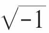
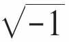
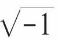

如何安排座位
七国外交官聚集在斯德哥尔摩，暂且把他们称为A、B、C、D、E、F、G，他们知晓的语言分别如下：
A：会英语；
B：会英语和汉语；
C：会英语、意大利语、俄语；
D：会日语和汉语；
E：会德语和意大利语；
F：会法语、日语和俄语；
G：会法语和德语。
晚上，这七国外交官即将出席一个晚宴，主办方得想办法给他们安排座位（圆桌就餐），可以使每个人能不用翻译就可以跟左右两边的人随意交流，比如B可以用英语跟左边的A交谈，B还可以用汉语跟右边的D交谈。总之，东道主要避免座位相邻的两个人语言不通。
我们把这七位外交官用点表示，如果A和B之间有共同语言，我们就将这A、B两个点连起来，其他的点也是一样，这样就得到下面的图。
问题的求解可以用求哈密顿回路来解决。这样的回路是存在的：A-B-D-F-G-E-C-A，按这样的回路安排圆桌位置，就可以使相邻的人随意交谈了。
这时，小文的手机提示QQ有留言了，是妈妈：
“家教结业了？”
“嗯嗯。”
“讲义看到哪儿了？”
“哈密顿图。”
“感觉如何？”
“看起来哈密顿图跟欧拉图挺相似的。”
“是有相似的地方，但它们是两个不同的问题。哈密顿回路是行遍每个顶点一次且仅一次，而欧拉回路是行遍每条边一次且仅一次。”
“哦，明白了。”
“说起来，这个哈密顿是一个神童。”
“怎么个神法？”
“他可能是从他母亲那里继承了那种过人的基因。他母亲出自一个以聪明著称的家族，他还有一个极具语言造诣的叔叔。他3岁跟着这个叔叔学习语言，据说他10岁之前已经掌握拉丁文、希腊文、希伯来文、意大利语、法语……总之，这时他已经掌握了通常意义上一般说得出名字的大部分语种，并开始学习叙利亚语、马来语、马拉塔语、孟加拉语、汉语以及其他天知道是什么的外国方言。”
“看起来哈密顿应该成为语言学家才对。”
“据说很多数学家不管开始怎么选择跟数学毫无关系的东西，最终也会像酒鬼不由自主地陷进酒缸一样陷进数学中去——哈密顿后来也渐渐对数学产生了兴趣，在17岁时，他自学掌握了微积分，并以阅读牛顿、拉普拉斯的书为消遣。”
“这让18岁的我们情何以堪。”小文附上一个表情。
“淡定，天才总是少数人，普通人自有普通人的乐趣嘛。”妈妈安慰道。
“怎么说？”
“天才级人物需要完成他们的使命，这个过程也是极其辛苦的呀，这个我们待会再谈。总之哈密顿在进大学之前没有正式上过学，18岁的时候却以第一名的身份进入都柏林的三一学院，在校期间哈密顿在数学和古典文学上都表现超群。在大学快毕业的时候他向爱尔兰皇家科学院提交了一份论文，科学院看过他提交的论文后的评价是，年轻的哈密顿是他这一代第一名的数学家。”
“这时他多大年纪呢？”
“20岁出头啊，他22岁的时候，经多名天文学家的一致推举，哈密顿成了天文学教授。”
“语言学天才走上了科学家的正道，那接下来呢？”
“按说金光大道已经铺就，但是正像欧拉在盛年一只眼睛失明一样，天才人物总会‘偶遇’一些挫折。”
“哈密顿也有什么不幸的事吗？”
“嗯，欧拉有一个幸福的家庭，哈密顿在这方面没有欧拉那么幸运，接着他又沉溺于酒精，这两件事情给哈密顿带来很多麻烦。”
“天才的发挥还需要有美满的家庭？”
“这个也说不准，但哈密顿后半生的生活环境确实比较糟糕。他死后在书房遗留下堆积如山的文稿，这对一个数学家来说很正常，不过让人吃惊的是里面还埋藏着无数的碗碟和数量可观已经变干的食物。”
“我不得不想到《安娜·卡列尼娜》那本书的开篇语了。”
“不过说实话，哈密顿在如此恶劣的生活环境下仍然没有间断工作实在是令人钦佩，仅在三一学院图书馆中就有哈密顿的250本笔记。”
“他也像欧拉一样一直不停地写？”
“是。哈密顿是爱尔兰历史上最伟大的数学家，这一点爱尔兰人深以为豪，他们的都柏林大学把本校的数学学院命名为哈密顿数学学院，学院网站主页就有那个非常著名的正十二面体哈密顿图。”
“哈密顿的文学天赋后来怎么样了？”
“嗯，这一点嘛，哈密顿一直保持写诗的爱好，他跟著名的湖畔诗人威廉·华兹华斯是好朋友，他们时常在一起讨论诗。不过也许在华兹华斯眼里，哈密顿的诗更像打油诗，哈密顿可能也很清楚这一点，他曾对华兹华斯说，他真正的诗其实是他的数学。”
“有趣，像诗一样的数学是什么样的？”
“下面这句应该是哈密顿最心爱的一句诗，可是他思考了十多年才得到的哟。”妈妈随后发过来这样一个公式：
i2=j2=k2=ijk=-1
“这是什么啊？”
“一个傍晚，哈密顿和妻子在都柏林散步，当他们走到柏洛翰姆桥时，哈密顿突然惊叫起来，飞快地在地上捡起一个石块，在桥墩上刻下上面的公式，这就是那个著名的四元数公式。在这座桥边，人们还嵌了一块碑作为纪念呢。”
“什么是四元数啊？”
“四元数是哈密顿在复数基础上自创的一种‘新数’，我们知道复数由一个实部和一个虚部组成，形如a+bi，其中a和b是实数，i是虚数单位，复数可用于表示二维坐标的旋转。而四元数由一个实部和三个虚部构成，可表示为a+bi+cj+dk，其中a、b、c、d为实数，i、j、k为三个虚数单位，这三个虚数单位满足哈密顿在柏洛翰姆桥上刻下的那个公式。哈密顿构造四元数的初衷是想解决如何描述物理学上的三维旋转问题，不过他遇到了一个困难，后来他发现必须去掉乘法在当时看来天经地义应该满足的交换律，才能解决这个问题。后来他也就这样做了。也就是说在四元数中，同样可以进行加、减、乘、除运算，但乘法不满足交换律。后来哈密顿一直醉心于四元数的研究，他的最后一本书就是长达八百多页的《四元数原理》。四元数由于在表示三维坐标旋转中独特的优越性，目前在计算机图形学、机器人学等领域都有很好的应用，你将来会用到的。”
“好期待哟！”
“从某方面说，四元数是哈密顿自创的一种新的代数系统，其实代数系统也是离散数学研究的重点之一，不过什么是代数系统，我们已经没有时间讨论了——对了，小文你后天几点的火车啊？”
“上午九点！”
“时间真不多了。因为四元数用到了虚数，所以这里说个有关哈密顿和虚数的小轶事吧——有一天，哈密顿给他的朋友德·摩根的信中写道：我认为或者是您或者是我——但我希望是您——必须在这个时候或者其他什么时候写一写

的历史。”
“德·摩根怎么回信的呢？”
“5天之后，德·摩根答复是：‘尊敬的爵士，关于

的历史，如果要写的话，要从印度人那儿开始好好写下来，那可不是一件小事。’其实小文，关于
的历史、四元数的历史，以及我们还没有讨论的代数系统的历史……都不是一件小事，这些内容你在大学再好好去学习吧。这里我们还是回到图论上来，你自己再继续看讲义，看完后收拾一下开学要带的行李，晚上我们再继续讨论。”
两人互道拜拜。